ホームページを、 ただつくるだけではない。 事業と集客を、ともに考える。
誰に、何を、どのように伝え、届けるか。RE DESIGNは、事業と集客全体を整理したうえで、目的を達成するためのホームページを制作します。
誰に、何を、どのように伝え、届けるか。RE DESIGNは、事業と集客全体を整理したうえで、目的を達成するためのホームページを制作します。
見た目を整え、必要な情報を掲載して公開する。
それだけでは、ホームページを必要な人に見つけてもらい、
問い合わせにつなげることはできません。
どのような顧客に来てほしいのか。
その顧客は、どこで情報を探しているのか。
何を伝えれば、興味や信頼につながるのか。
そして、どのような行動をしてほしいのか。
こうした設計がないまま制作を始めると、
ホームページはあっても、顧客を獲得する仕組みにはなりません。
ホームページで成果を生むためには、載せる情報や見た目を考える前に、事業の現在地を整理する必要があります。
現在抱えている課題、これから達成したいこと、届けたい顧客、商品やサービスが提供できる価値。対話を通じて一つずつ整理し、ホームページで「誰に、何を伝えるべきか」を明らかにします。
課題・顧客・事業をそれぞれ整理し、関係をつなげることで、
ホームページ全体の判断基準となる「伝える軸」を定めます。
価値のある商品やサービスも、ただホームページに掲載するだけでは顧客に届きません。
どこで見つけてもらい、何に興味を持ち、どの情報から理解や信頼につなげるのか。01で整理した「誰に、何を伝えるか」をもとに、顧客との接点から問い合わせまでを一つの流れとして設計します。
見つけてもらう
接点を設計する
検索・広告・SNSなど、顧客が情報を探す場所に合わせて、接点と入口を設計します。
興味を持ってもらう
課題と事業の価値を結びつける
顧客が「自分に関係がある」と感じ、続きを知りたくなる訴求をつくります。
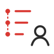
理解してもらう
判断できる順番で伝える
商品やサービスの内容・違いを、理解しやすい言葉と情報の順番で伝えます。
信頼してもらう
選ぶための根拠を示す
実績・事例・料金・お客様の声など、不安を減らし、信頼につながる情報を整えます。
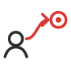
行動してもらう
相談までの迷いを減らす
CTAやフォーム、案内文を整え、迷わず問い合わせへ進める導線をつくります。
制作が始まると、担当は営業からディレクター、デザイナー、実装へと移っていきます。事業の話を一番聞いた人が、つくる場所にいないことは珍しくありません。そこに納期が重なると、目的は「お客様にOKをもらうこと」に置き換わり、出来上がったものが「なんとなく違う」ものになります。
01で整理した「誰に、何を伝えるか」と、02で設計した接点から問い合わせまでの流れ。それらを基準に、原稿・デザイン・実装を、一つのつながりとして制作します。
情報の優先順位、言葉、見せ方、操作性まで、すべてを同じ目的から判断することで、設計した意図を保ったまま、ホームページとして形にします。
担当が替わる制作
引き継ぐたびに、意図がこぼれ落ちる。
RE DESIGN
設計した人が、最後まで同じ基準で見る。
※ 案件に応じて専門パートナーと連携します。
ホームページは、公開した時点で完成ではありません。
実際にどのページが見られ、どこで離脱し、どの経路から問い合わせにつながっているのか。顧客の反応を確認しながら、改善すべき場所と、次に取り組む施策の優先順位を決めていきます。
日々の更新・保守から、アクセス解析、改善、集客施策の実行まで。必要な支援を、必要な範囲で行います。
お知らせや実績の更新をはじめ、WordPressやプラグインの保守、バックアップ、不具合対応など、ホームページを安定して使い続けるための日々の運用を支えます。
アクセス解析をもとに、ページごとの閲覧状況や問い合わせまでの動きをレポートにまとめ、改善すべき箇所を整理します。コンテンツや導線、原稿、CTA、フォームなど、優先度の高いところから見直します。
SEO、Web広告、SNS、LINE、DMなど、制作前に設計した集客施策を公開後の運用へつなげます。施策の実行から振り返り、次の改善まで、Webの専門パートナーとして継続的にサポートします。
保守・運用サポートのご利用は任意です。
ご希望の内容や頻度に合わせて、スポットまたは継続で対応します。
無料相談
いまの状況をお聞かせください。今取り組むべきことと、後から追加できることを、一緒に整理します。
売り込みは一切しません。
どの案件も、誰に何を伝えるかの整理から始めています。実績の一部をご紹介します。
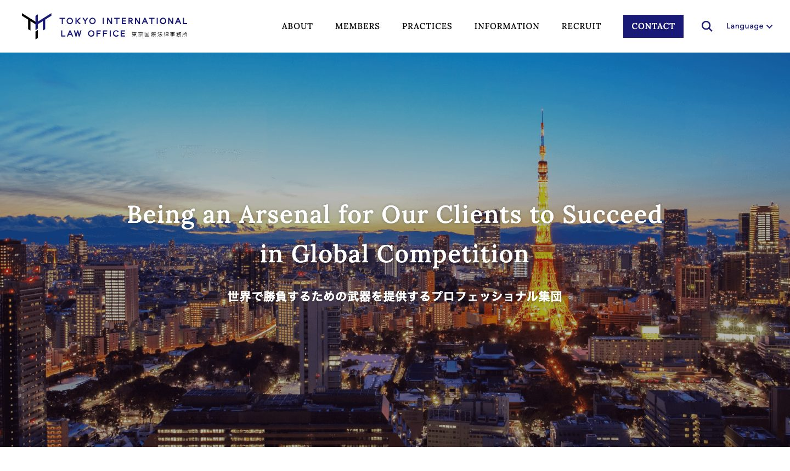
「世界で勝負する企業を支える事務所」という立ち位置が、最初の一画面で伝わることを優先しました。
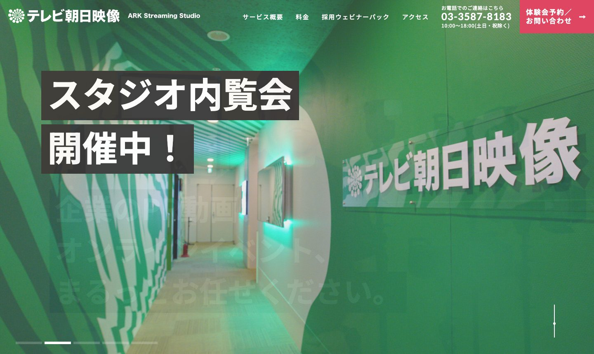
スタジオの中の様子と、そこでできることが、見学の前にイメージできる構成にしました。
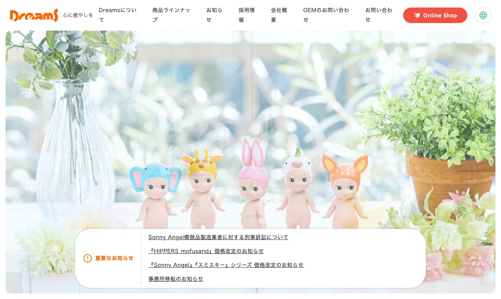
商品のかわいらしさを主役にして、会社の姿勢が自然に伝わる入口にしました。
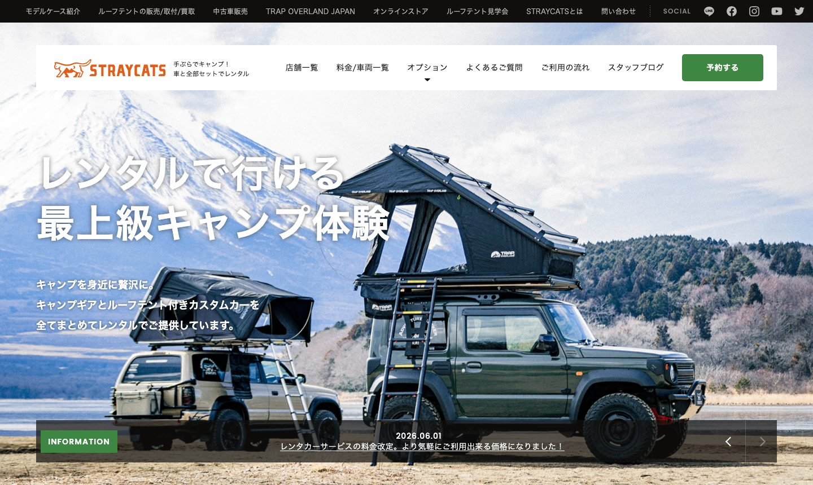
「手ぶらで行ける」ことが、写真とひと言ですぐにわかる見せ方にしました。
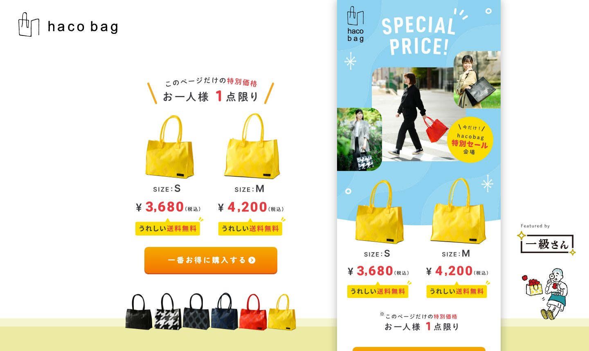
サイズと価格を先に見せて、迷わず選べる順番に組みました。
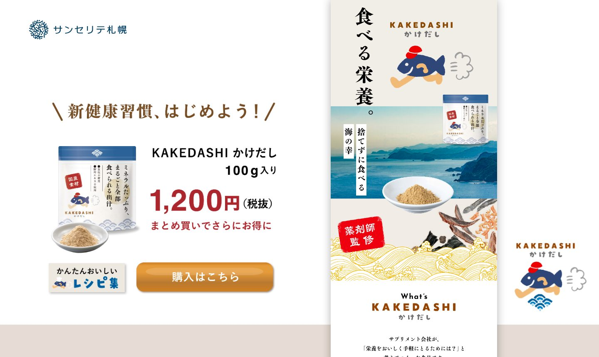
はじめての方にも、何の商品で、どう使うのかがひと目でわかる構成にしました。
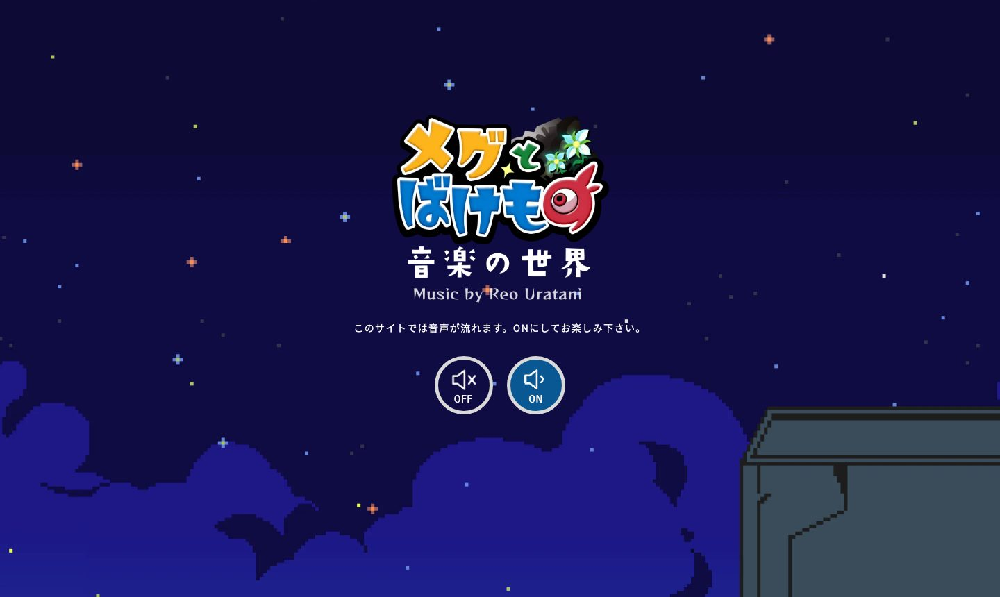
物語の世界に入ってから音楽を聴けるように、演出と導線を設計しました。
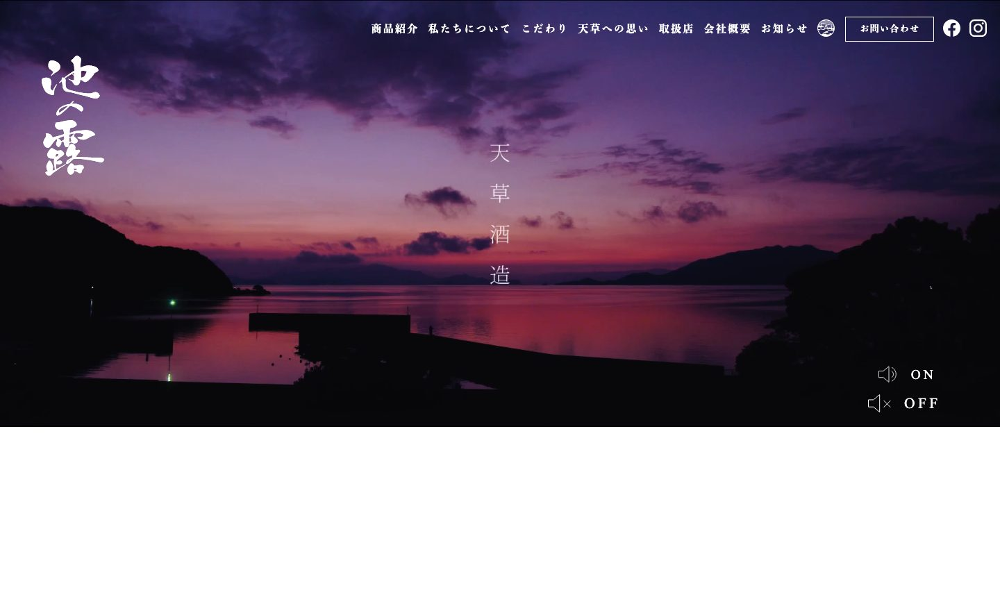
土地の空気と手づくりの姿勢を、言葉より先に写真で伝えることを軸にしました。
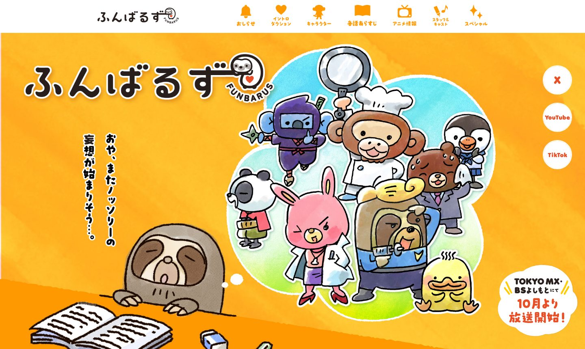
キャラクターのにぎやかさを、そのまま最初の一画面に詰め込みました。
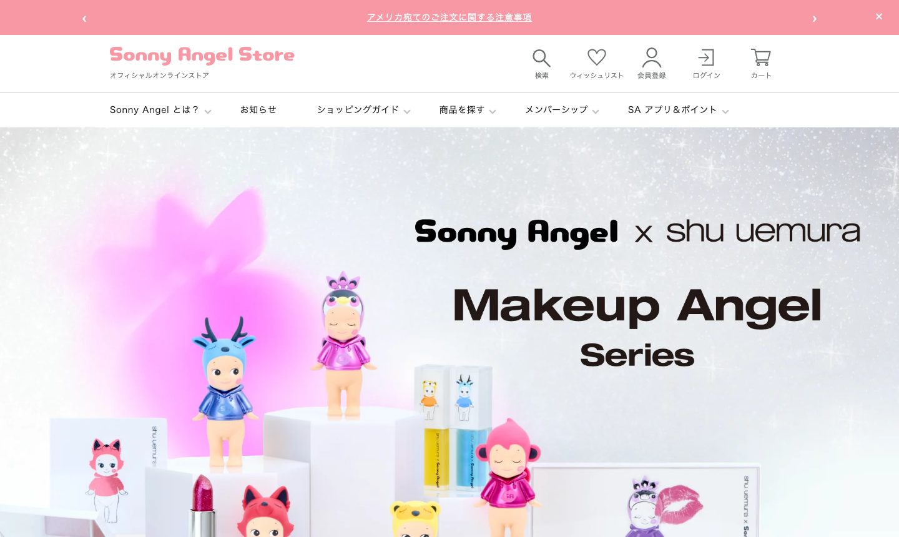
新作と、探している商品に、すぐたどり着ける売り場づくりを優先しました。
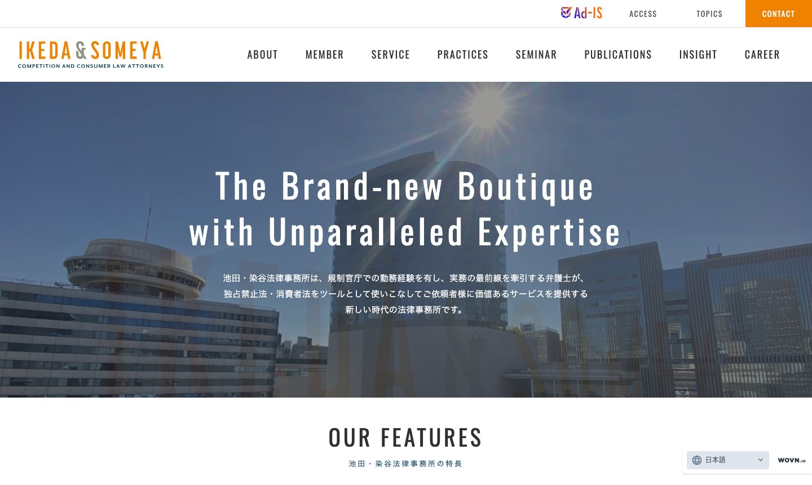
専門性の高さが、落ち着いた印象と一緒に伝わる設計にしました。
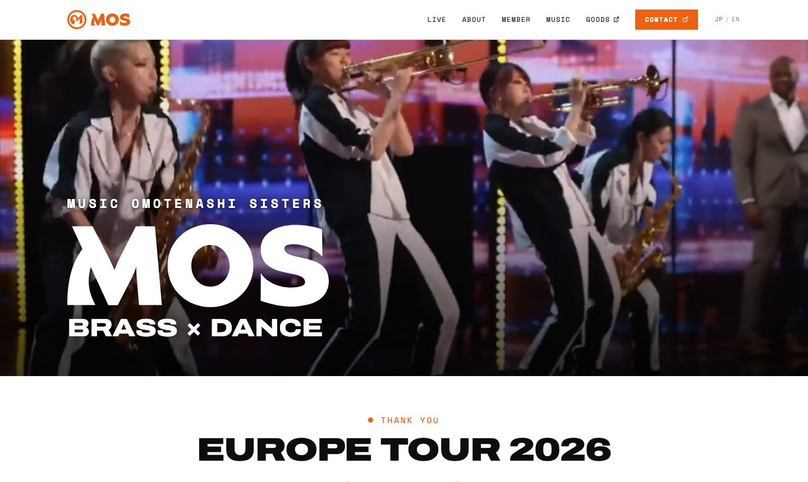
演奏とダンスの勢いが、開いた瞬間に伝わる見せ方にしました。
01 / 12
料金の目安
目的やご予算を伺い、必要な制作内容と費用をご提案します。以下は目安です。
※掲載金額はすべて税別です。
LP制作
15万円〜
商品・サービスを伝え、問い合わせにつなげる1ページ
小規模ホームページ
30万円〜
会社・店舗の基本情報をまとめた3〜5ページ程度
コーポレート・サービスサイト
50万円〜
複数の事業やサービスを整理し、問い合わせまでの導線を設計
構成・原稿作成のサポート・デザイン・スマートフォン対応・フォーム・アクセス解析の設定を含みます。
ページ数や機能、素材の準備状況によって費用が変わります。
更新・保守
月額1万円〜
アクセス解析・
月額3万円〜
広告運用
月額5万円〜※広告費別途
修正・追加制作
都度お見積り
今取り組むことと、後から追加することを一緒に整理します。対応内容と金額は制作前に明示し、確認なく追加料金が発生することはありません。
相談無料
オンラインまたは対面で、現状と目的、ご予算の目安を伺います。
整理無料
伺った内容をもとに、事業・顧客・課題を整理します。
提案無料
サイトの構成、必要な施策、お見積りをご提案します。ご契約はこのあとです。
制作
原稿・デザイン・実装を、一つのつながりとして進めます。
公開
最終確認のうえ公開し、アクセス解析の計測を始めます。
運用任意
反応を見ながら、改善と次の施策を決めていきます。
ご相談・整理・ご提案までは費用をいただきません。ご提案の内容とお見積りにご納得いただいてから、ご契約・制作に進みます。
きれいなだけのホームページでは、事業は変わりません。RE DESIGNは、事業の価値を整理し、それが必要な人に届くところまでを仕事だと考えています。つくって終わりではなく、公開後も一緒に育てていくパートナーとして、末永くお付き合いできれば嬉しいです。
 RE DESIGN 代表梅木 〇〇
RE DESIGN 代表梅木 〇〇
LP制作は15万円〜、小規模ホームページは30万円〜、コーポレート・サービスサイトは50万円〜が目安です（税別）。内容を伺ったうえで、制作前に対応内容と金額を明記したお見積りをご提示します。
小規模サイトで約1.5〜2ヶ月、コーポレートサイトで約2〜3ヶ月が目安です。事業整理と原稿づくりに時間をかけるため、期間には余裕を持ってご相談ください。
ページ数の追加や、撮影・イラストなど外部費用が必要になった場合のみです。その際も、作業前に必ず金額をご確認いただきます。黙って追加請求することはありません。
ページを「作ること」自体は簡単になりました。難しいのは、誰に何を伝えるかを決め、集客まで設計することです。RE DESIGNはその部分にこそ時間をかけます。制作にはAIも活用し、費用を抑えています。
はい。更新・保守から解析・改善提案、集客施策まで継続して支援します。保守契約は任意で、スポットでの修正依頼も可能です。
売り込みは一切しません。
現状の整理だけでもお気軽にどうぞ。
内容を確認のうえ、2営業日以内にメールでご連絡します。
お急ぎの場合は、その旨を追記のうえ再送いただいても構いません。